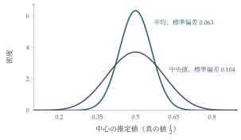

STEP II 2000、第14問
先に進む前に問題を読んでおこう。問題は STEP Support Programme の問題データベースにある： step.maths.org/questions/00-s2-q14
導入
測定値の集まりの中心を推定するには、平均（mean）をとることも中央値（median）をとることもできる。どちらがよいのだろうか。答えはデータによって異なる。ときおり大きく外れた誤差を含む測定値では、中央値のほうがはるかに信頼できる。ばかげた値が一つあるだけで平均はどこへでも引きずられてしまうが、中央値はほとんど動かない。性質のよいデータでは、たいてい平均のほうが優れている。この問題は、一様分布に従うデータについて、平均がどれほど優れているかを測るものである。中央値の分散（variance）は平均の分散の3倍であり、したがって中央値を平均と同じ精度にするには3倍の観測値が必要になる。
この比較を通じて、統計的手法を選ぶうえでの主要な考え方の一つである効率（efficiency）と、第 4.4 節 にも登場したベータ積分（beta integral）を紹介する。
取りかかる前に
中央値の密度（density）が \(y^n(1 - y)^n\) に比例するのはなぜか。（\(Y\) が \(y\) の近くにあるためには、\(2n + 1\) 個の値のうちいくつが \(y\) より小さく、いくつが \(y\) より大きくなければならないか。）
中央値が \(y\) にあるためには、値の一つが \(y\) にあり、\(n\) 個がそれより小さく（それぞれ確率 \(y\)）、\(n\) 個がそれより大きく（それぞれ確率 \(1 - y\)）なければならない。これにより因子 \(y^n(1 - y)^n\) が得られる。定数は、どの値がどこに入るかの選び方の数を数えたものである。
順を追って解く
段階 1 定数
密度の積分は \(1\) でなければならない。 \[k\int_0^1y^n(1 - y)^n\,\mathrm{d}y = k\cdot\frac{n!\,n!}{(2n + 1)!} = 1, \qquad k = \frac{(2n + 1)!}{(n!)^2}. \qed\]
段階 2 平均と分散
密度は \(\frac12\) に関して対称である（\(y\) を \(1 - y\) に置き換えればよい）から、\(\mathrm{E}(Y) = \frac12\) である。
ベータ積分を用いて \(\mathrm{E}(Y^2) = k\int_0^1y^{n+2}(1 - y)^n\,\mathrm{d}y\) を計算し、階乗を整理せよ。
\[\mathrm{E}(Y^2) = \frac{(2n + 1)!}{(n!)^2}\cdot\frac{(n + 2)!\,n!}{(2n + 3)!} = \frac{(n + 2)(n + 1)}{(2n + 3)(2n + 2)} = \frac{n + 2}{2(2n + 3)}.\] したがって \[\mathrm{Var}(Y) = \frac{n + 2}{2(2n + 3)} - \frac14 = \frac{2(n + 2) - (2n + 3)}{4(2n + 3)} = \frac{1}{4(2n + 3)}. \qed\]
段階 3 平均との比較
\(2n + 1\) 個の独立な一様分布に従う確率変数の平均 \(\bar X\) の平均と分散はいくらか。
各 \(X_i\) の平均は \(\frac12\)、分散は \(\frac{1}{12}\) であるから、\(\mathrm{E}(\bar X) = \frac12\)、\(\mathrm{Var}(\bar X) = \frac{1}{12(2n + 1)}\) である。\(n\) が大きいとき、 \[\mathrm{Var}(Y) \approx \frac{1}{8n}, \qquad \mathrm{Var}(\bar X) \approx \frac{1}{24n}.\]
\(Y\) と \(\bar X\) がともに平均 \(\frac12\)、標準偏差（standard deviation）\(\sigma_Y\)、\(\sigma_{\bar X}\) の正規分布に従うとして、両方の確率を標準正規分布の分布関数 \(\Phi\) を用いて表せ。
\(\mathrm{P}\bigl(|Y - \frac12| < \frac{d}{\sqrt n}\bigr) = 2\Phi\bigl(\frac{d}{\sqrt n\,\sigma_Y}\bigr) - 1\) であり、\(\sqrt n\,\sigma_Y \to \frac{1}{\sqrt8}\) である。\(\bar X\) についても同様で、\(\sqrt n\,\sigma_{\bar X} \to \frac{1}{\sqrt{24}}\) となる。よって二つの確率はそれぞれ \(2\Phi(d\sqrt8) - 1\) と \(2\Phi(d\sqrt{24}) - 1\) に近づく。\(\Phi\) は増加関数であり \(\sqrt{24} > \sqrt8\) であるから、後者のほうが大きく、したがって十分大きいすべての \(n\) について不等式が成り立つ。■ 平均のほうが真の中心に近い値をとりやすいのである。

振り返り
ベータ積分。 \(\int_0^1y^r(1 - y)^s\,\mathrm{d}y\) という一つの公式から、正規化定数とモーメントの両方が得られた。
対称性から平均が得られた。 \(\mathrm{E}(Y)\) を求めるのに積分は必要なかった。
ばらつきは適切な尺度で比較する。 標準偏差に \(\sqrt n\) を掛けることで、比較が \(n\) によらないものになった。
背後にある数学
効率
二つの不偏推定量（unbiased estimator）の相対効率（relative efficiency）とは、それらの分散の比である。これは、一方が他方に匹敵するには何倍の観測値が必要かを表す。一様分布のデータでは、中央値の平均に対する効率は \(\frac13\) である。正規分布のデータでは \(\frac2\pi \approx 0.64\) であり、中央値には約 \(57\%\) 多くの観測値が必要になる。しかし裾の重いデータでは立場が逆転する。コーシー分布（Cauchy distribution、第 12.22 節）では平均は役に立たない。\(n\) 個の観測値の平均は観測値一つと比べて少しもよくならないからである。一方、中央値はうまく機能する。ラプラス分布（Laplace distribution、第 12.24 節）では、中央値の効率は平均の2倍である。
頑健統計
中央値は頑健（robust）である。データのほぼ半分を任意の値に変えても、中央値は大きくは動かない。平均にはそのような防御がなく、誤った値が一つあるだけで台なしになりうる。1960年代から1970年代にかけて、ジョン・テューキー（John Tukey）、Peter Huber らは頑健統計（robust statistics）を発展させた。これは、きれいなデータに対しては平均とほぼ同じ効率をもちながら、外れ値（outlier）には強い推定量であり、たとえば刈り込み平均（trimmed mean、最大と最小の \(10\%\) を捨てて残りを平均したもの）がある。これは飛び込みや体操などの競技の採点に用いられている。
ラプラス（Laplace）は1774年に、誤差が二重指数分布（ラプラス分布）に従うならば、真の値の最良の推定値は中央値であることを示した。ガウス（Gauss）は1809年に、誤差が正規分布に従うならば最良の推定値は平均であることを示し、これが最小二乗法（method of least squares）へとつながった。どちらが正しいかは誤差のふるまいによって決まり、これは新しい種類のデータが現れるたびに統計学者がいまなお議論している問題である。
思考のスキル
二つの手法がどちらも平均的には正しいことがある。そのときは、答えがどれだけばらつくか、そしてデータが増えるにつれてそのばらつきがどれだけ速く小さくなるかを比較せよ。
大学では、大標本における分散の比較である漸近効率（asymptotic efficiency）が、モデルが誤っているかもしれない場合のための頑健性とともに、統計的手法を選ぶ際の標準的な道具となっている。
次の一歩
中央値の密度。 値が一つ \([y, y + \delta y]\) にあり、\(n\) 個がそれより小さく、\(n\) 個がそれより大きいという数え上げによって、密度 \(\frac{(2n + 1)!}{(n!)^2}y^n(1 - y)^n\) を導け。
三つの観測値。 \(n = 1\)（一様分布の観測値が三つ）のとき、\(\mathrm{Var}(Y)\) と \(\mathrm{Var}(\bar X)\) を正確に求めよ。どちらが小さいか。
ミッドレンジ。 中心のもう一つの推定量に、ミッドレンジ（midrange）\(\frac12(\max + \min)\) がある。一様分布のデータで観測値が \(m = 2n + 1\) 個のとき、その分散が \(\frac{1}{2(m + 1)(m + 2)}\) であることを示せ。平均と比べてどうか。（第 13.3 節 と比較せよ。）
外れ値。 11個の測定値が \(9.8\)、\(9.9\)、\(10.0\)、\(10.0\)、\(10.1\)、\(10.1\)、\(10.2\)、\(10.2\)、\(10.3\)、\(10.4\)、\(104\)（入力ミス）である。平均と中央値を比較せよ。
さらに学ぶために
John Rice, Mathematical Statistics and Data Analysis（Duxbury）。順序統計量と効率について。
Rand Wilcox, Fundamentals of Modern Statistical Methods（Springer）。頑健な手法がなぜ重要なのかを、専門家でない読者向けに解説している。
Stephen Stigler, The Seven Pillars of Statistical Wisdom（Harvard University Press）。集約、平均、中央値を歴史的な視点から論じている。